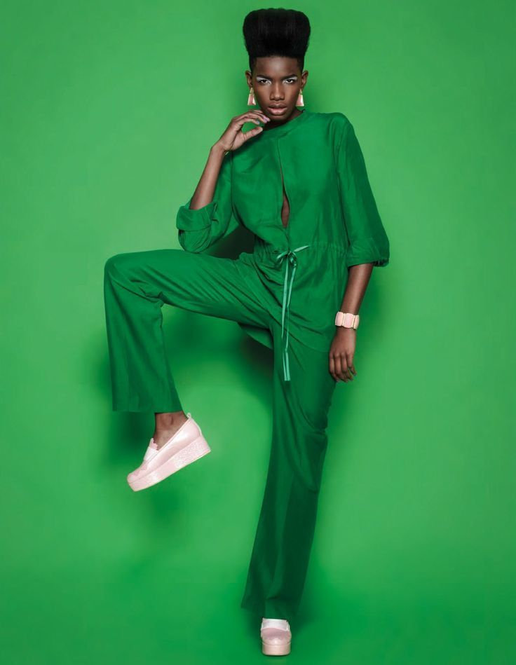
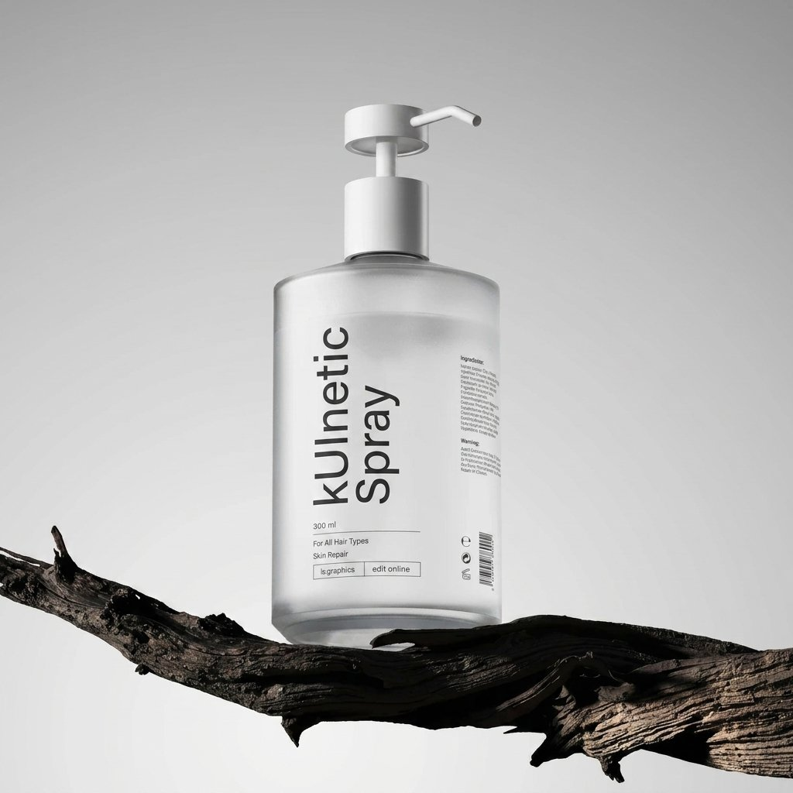
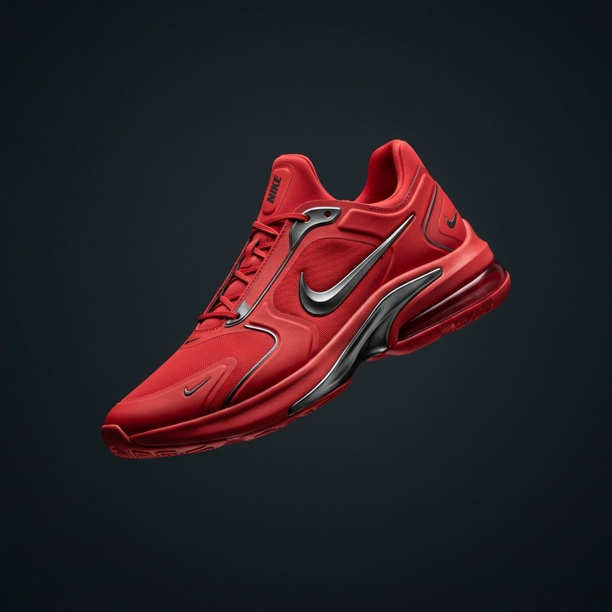
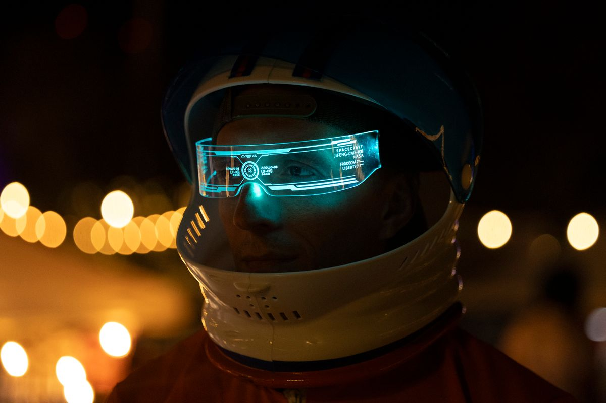

Declarative web animation
CSS animations using HTML attributes.
data-kui compiles into real @keyframes and native scroll-driven timelines.
- Just an attribute —
data-kui="blur-in 1000ms" - No animation loop.
- No runtime once it's compiled.
Standalone · MIT · zero JS runtime dependency for CSS-rendered effects
Made by Leon A.

One attribute. One compiled animation.
Author the effect name, timing, and parameters directly on the element. The parser resolves it once against a channel model that keeps unrelated effects from fighting over the same CSS property, then hands the rest to the browser's own compositor.
<h2 data-kui="fade-blur-up 800ms">
Disjoint channels compose
without a conflict.
</h2>Disjoint channels compose without a conflict.
Three things it actually does
CSS-native
Entrances, 3D tilt, and reveals run as real @keyframes on the compositor thread. They keep running if a script is slow, blocked, or never loads at all.
JavaScript only where necessary
Drag, gesture, text-splitting, and scroll-position effects are JS-prepared — every other primitive in the catalog needs none of it.
Scroll-driven, not scroll-listened
Pins, parallax, and scrollytelling prefer native animation-timeline: view(), falling back to one shared scheduler rather than a listener per effect.
Animated on real content, not just typography
Three photographs, three live effects — a scroll-linked parallax drift, a slow ken-burns zoom, and a diagonal wipe reveal. All compiled CSS, all playing on their own — nothing here waits for a hover.
 parallax-y
parallax-y

ken-burns
wipe-diagonal252 named effects
from 30 primitives across 15 catalog categories — entrance, scroll mechanics, 3D, text, forms, navigation, gestures, and more.
Text

typewriter
Number
count-up
Combo · launch countdown
fade-blur-up + count-down · delayed 500ms
Ship it in two lines.
Standalone, MIT-licensed, framework-agnostic. No product or CMS coupling — drop the
two files in and start authoring data-kui attributes.
npm install kuinetic
<script src="./kuinetic.all.js"></script>
<link rel="stylesheet" href="./kuinetic.css">
<script src="./kuinetic.js"></script>
<script>
kuinetic.kuinetic({ observe: true }).start()
</script>